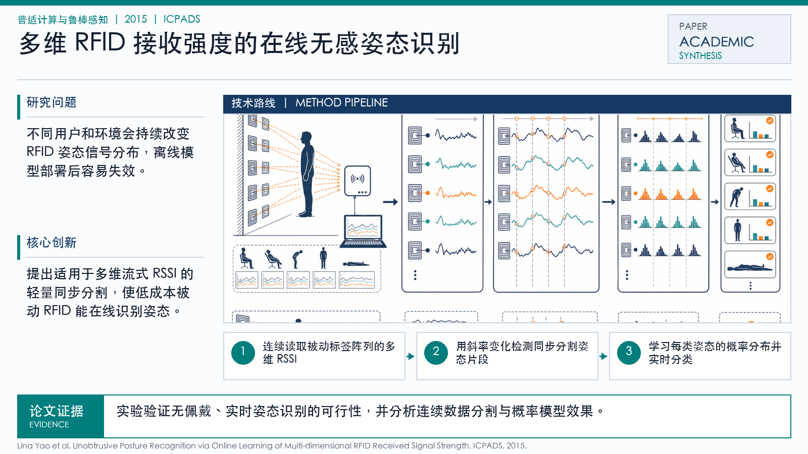

Problem
解决的问题
不同用户和环境会持续改变 RFID 姿态信号分布，离线模型部署后容易失效。
Pervasive Computing and Robust Sensing · 2015 · ICPADS
Unobtrusive Posture Recognition via Online Learning of Multi-dimensional RFID Received Signal Strength
Problem
不同用户和环境会持续改变 RFID 姿态信号分布，离线模型部署后容易失效。
Value
实验验证无佩戴、实时姿态识别的可行性，并分析连续数据分割与概率模型效果。
Paper-grounded Academic Summary
该代表页依据原文摘要、贡献段与方法图注生成。方法视觉由 ImageGen 按论文证据逐篇绘制，中文研究问题、技术路线、创新点与实验结论采用确定性排版，以保证内容与字符准确。
打开原文 PDF
Technical Route
Innovation